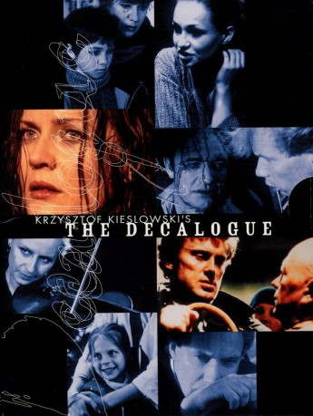

")
 
 IMDB-Wertung: 9.1 / 10
IMDB-Wertung: 9.1 / 10  Metascore:
Metascore: 
Lose auf den zehn biblischen Geboten basierend, inszentierte Krzysztof Kieślowski ein zur ethischen Reflektion einladendes TV-Meisterwerk, das im modernen Polen der ausgehenden Achtziger Jahre spielt. Als verbindendes Element zwischen zumindest neun der zehn Beiträge fungiert eine vom selben Schauspieler verkörperte Figur, die unabhängig von der eigentlichen Handlung entwickelt wird. Kieślowski entwirft wie auch in seinen Spielfilmarbeiten ein in der Milieuschilderung realistisches, in der Gestaltung symbolisch überhöhtes Bild der modernen Gesellschaft und überprüft daran die Gültigkeit der Jahrtausende alten Verhaltensregeln.Das Drehbuch zur polnischen Fernsehreihe stammt von Kieślowski und Krzysztof Piesiewicz, der im zivilen Leben als Rechtsanwalt arbeitete. Die Filmmusik schrieb der Krakauer Zbigniew Preisner, dessen Name eng mit Kieślowskis Regiearbeiten verbunden ist.
Jahr: 1989
Dauer: 53 Minuten
FSK: 16
Land: Polen Studio: Criterion Collection, TheTonspuren:
Untertitel:
Auflösung: 720p (1280x720) Größe: 944 MB
Regisseur:  Krzysztof Kieslowski
Krzysztof Kieslowski
Drehbuch: Sender Freies Berlin (SFB)
Soundtrack:
Darsteller:
 Olgierd Lukaszewicz als Andrzej
Olgierd Lukaszewicz als Andrzej Krystyna Janda als Dorota Geller
Krystyna Janda als Dorota Geller Daniel Olbrychski als Janusz
Daniel Olbrychski als Janusz Krzysztof Globisz als Piotr
Krzysztof Globisz als Piotr Zbigniew Zamachowski als Artur
Zbigniew Zamachowski als ArturDatei: X:\HD-Serien\Dekalog\Dekalog, Eins.mp4 seit 01.09.2017
Festplatte: HD Serien(A-H)
 Es gibt insgesamt 182 Filme in der Gruppe 'HD-Serien'
Es gibt insgesamt 182 Filme in der Gruppe 'HD-Serien'